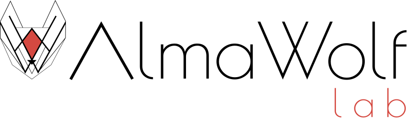
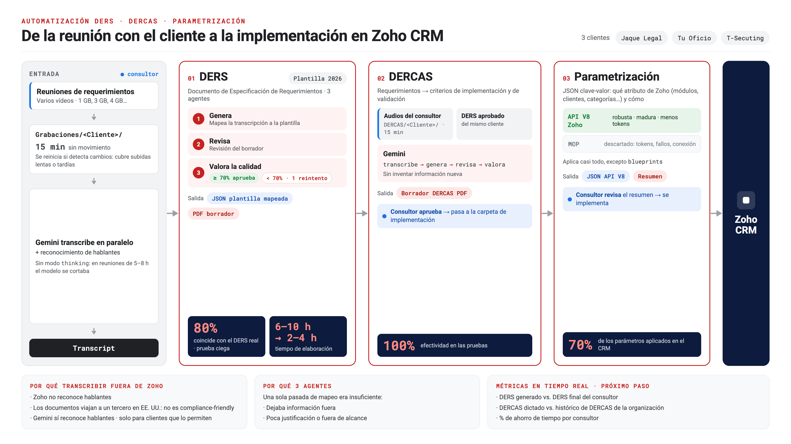
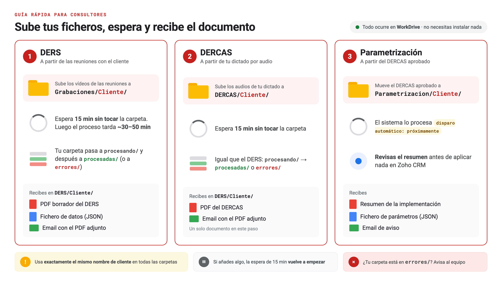

DERS / DERCAS Automation

El proyecto
El consultor graba y dicta. El sistema documenta y configura.
Cada proyecto de consultoría genera dos documentos críticos: el DERS (Documento de Especificación de Requerimientos del Sistema) y el DERCAS (Documento de Especificación de Requerimientos del CRM y Automatizaciones del Sistema). Hasta ahora, ambos se redactaban manualmente después de cada reunión con cliente.
DERS/DERCAS Automation convierte las grabaciones en borradores estructurados listos para revisión y prepara la configuración para el CRM. El consultor solo sube los archivos y revisa el resultado.
El módulo DERS está en producción. El módulo DERCAS está en piloto. La parametrización directa al CRM está en investigación.
Arquitectura
Tres módulos encadenados.
Cada uno autónomo.
Cada uno autónomo.
DERS
Detecta nuevas grabaciones en WorkDrive, transcribe con Gemini Flash en paralelo, extrae requerimientos con trazabilidad reunión + minuto, e inyecta boilerplate GDPR y formación. Genera PDF en 3 pasadas.
DERCAS
El consultor dicta la solución en audio. El sistema empareja con el DERS generado, aplica RAG sobre DERCAS anteriores y el catálogo Zoho, y genera el documento estructurado por requerimiento con criterios de viabilidad.
Parametrización CRM
Envío directo de la configuración del DERCAS al CRM vía Zoho REST v8. Requiere aprobación humana antes de cada escritura. Reemplaza la integración Zoho MCP descartada por limitaciones técnicas.


Siguientes fases
Cuatro frentes simultáneos.
Operaciones
Escalado operativo
Alerta configurable por consultor en WorkDrive. Notificaciones a Zoho Cliq para visibilidad del equipo. Índice de DERS en Data Store para consulta histórica entre proyectos.
Infraestructura
Catalyst Production
Despliegue del sistema en Catalyst Production con cuenta de equipo compartida. Decisión de billing pendiente: freemium vs. cuenta corporativa según volumen de proyectos mensuales.
Experiencia consultor
Revisor por voz
DERS entregado en Word editable para marcado de correcciones. Correcciones dictadas por voz procesadas de forma incremental. Ciclo de revisión en sandbox antes de entrega al cliente.
CRM
Parametrización Zoho
Implementación del DERCAS directamente en Zoho CRM vía REST v8. Sandbox para validación antes de producción. Aprobación humana obligatoria en cada escritura al CRM.